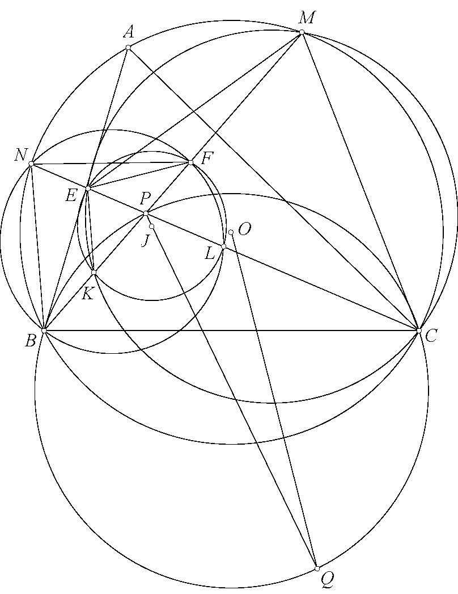
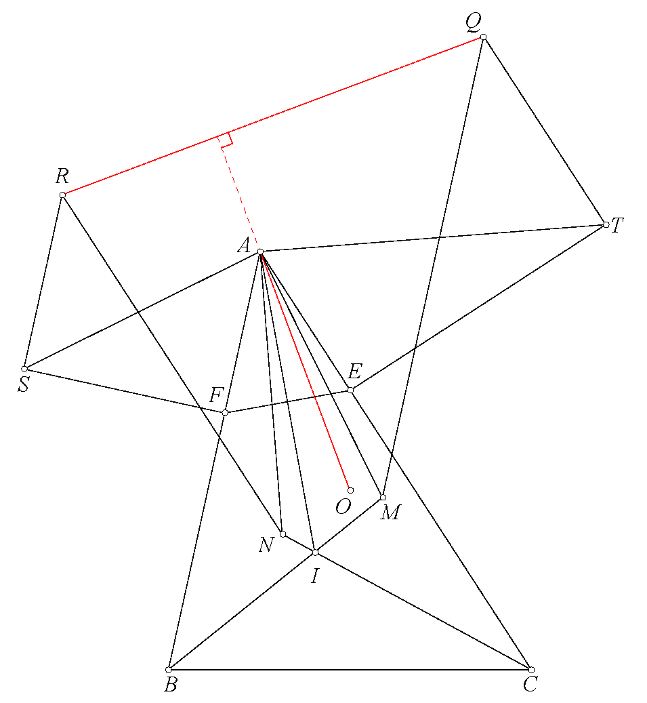
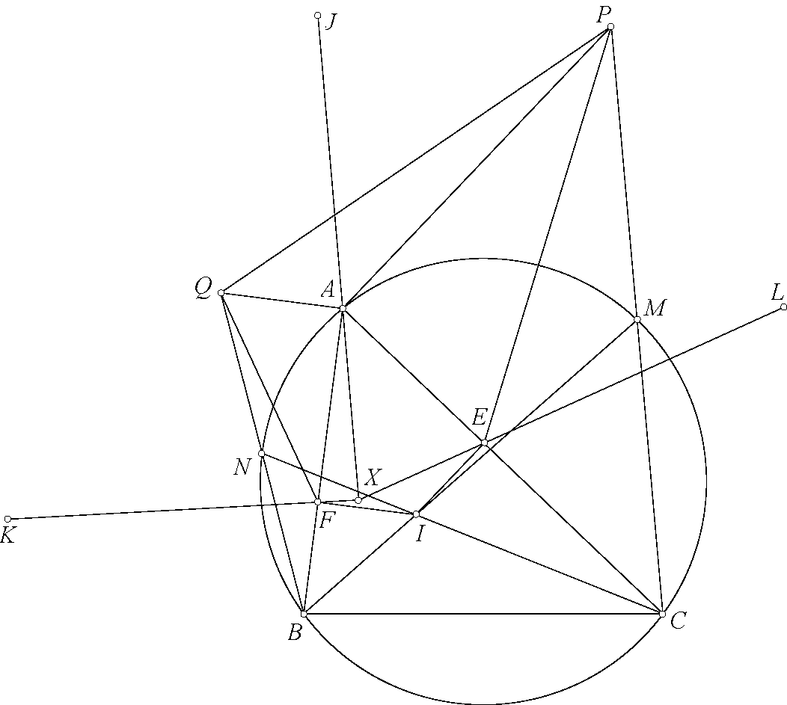
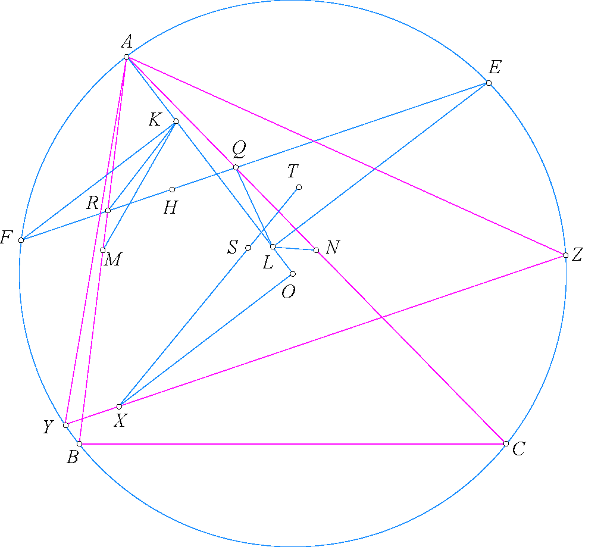

Home
How to Use the Website
Ratio Chasing
Common Approach
By using a combination of familiar theorems such as Menelaus and Ceva, techniques like cross-ratio, together with the law of sines (For triangle \(ABC\), we have
\[
\dfrac{\sin \angle ABC}{\sin \angle ACB} = \dfrac{AC}{AB}
\]
), I want to highlight the practicality of this method when it is not possible to prove it in the usual way.
Example from a problem I solved
Illustrative Problem
Very Hard
(Source: AoPs, user
goaoat)
Let \( \triangle ABC \) be a triangle with orthocenter \( H \) and circumcircle \( (O) \).
Let the tangents from \( B \) and \( C \) to \( (O) \) intersect at \( K \),
and let the feet of \( K \) onto \( AC \) and \( AB \) be \( E \) and \( F \).
Let the circle with diameter \( EF \) intersect the nine-point circle of \( \triangle ABC \)
at \( X \) and \( Y \). If the tangents from \( X \) and \( Y \)
to the nine-point circle intersect at \( Z \), show that \( H, K, Z \) are collinear.

Solution:
Practice Problems
Problem 1
Extremely Hard
(Teacher Tran Quang Hung on AoPS forum) Given triangle \(ABC\). Circle \((K)\) passing through \(B\) and \(C\) intersects \(CA\) and \(AB\) again at points \(E\) and \(F\) respectively. Let \(H\) be a point such that \(HE \perp CA\) and \(HF \perp AB\). Line \(AH\) intersects the circle \((BHC)\) again at \(D\). Line \(KD\) intersects \(BC\) at \(P\). On line \(AP\), choose point \(X\) such that \(HX \parallel BC\). A circle passing through \(A\) and \(H\) intersects \(CA\) and \(AB\) again at points \(M\) and \(N\) respectively. Circle \((J)\) passes through \(B\) and \(N\) and is tangent to line \(HB\). Circle \((L)\) passes through \(C\) and \(M\) and is tangent to line \(HC\). Prove that point \(X\) lies on the radical axis of circles \((J)\) and \((L)\).

Problem 2
Moderate
(Teacher Tran Quang Hung on AoPS forum)Let \( \triangle ABC \) be inscribed in the circle \( (O) \), and let \( P \) be an arbitrary point.
\( PQ \) is the diameter of the circumcircle of \( \triangle PBC \).
Points \( E \) and \( F \) lie on \( PC \) and \( PB \), respectively, such that \( EF \perp OQ \).
Lines \( PB \) and \( PC \) intersect \( (O) \) again at \( M \) and \( N \), respectively.
The circumcircles of \( \triangle CME \) and \( \triangle BNF \) intersect \( PB \) and \( PC \) again at \( K \) and \( L \), respectively.
Prove that the four points \( E, F, K, L \) lie on a circle \( (J) \), and \( J \) lies on \( PQ \).

Problem 3
Moderate
(Teacher Tran Quang Hung on AoPS forum)Given a triangle \( ABC \) with incenter \( I \).
The perpendicular bisectors of \( AB \) and \( AC \) intersect \( IB \) and \( IC \) at \( M \) and \( N \), respectively.
The perpendicular bisector of \( IA \) intersects \( CA \) and \( AB \) at \( E \) and \( F \), respectively.
Choose points \( S \) and \( T \) such that
\( AS \perp AM \), \( FS \perp AB \), \( AT \perp AN \), and \( ET \perp AC \).
Choose points \( Q \) and \( R \) such that
\( MQ \parallel SR \parallel AB \) and \( TQ \parallel NR \parallel AC \).
Prove that \( QR \perp AO \), where \( O \) is the circumcenter of \( \triangle ABC \).

Problem 4
Hard
(Teacher Tran Quang Hung on AoPS forum)Given a triangle \(ABC\) with incircle \((I)\) touching \(CA\) and \(AB\) at \(E\) and \(F\), respectively. The lines \(IB\) and \(IC\) intersect the circumcircle \((ABC)\) again at \(M\) and \(N\), respectively. Let \(P\) and \(Q\) be the reflections of \(C\) and \(B\) across \(M\) and \(N\), respectively. Denote \(J\), \(K\), and \(L\) as the circumcenters of triangles \(APQ\), \(BFQ\), and \(CEP\), respectively. Prove that \(FK\), \(EL\), and \(AJ\) are concurrent.

Problem 5
Moderate
(Teacher Tran Quang Hung on AoPS forum)Let the triangle \(ABC\) with \(P,Q\) as two isogonal conjugate points.
\(E,F\) are the projections of \(P\) onto \(CA,AB\) respectively.
\(M,N\) are symmetrical of \(Q\) through the midpoints of \(BE,CF\) respectively.
\(MN\) meets \(EF\) at \(R\).
Prove that \(PR\parallel BC\).

Problem 6
Very Hard
(Teacher Tran Quang Hung on AoPS forum)Let \(ABC\) be an acute triangle inscribed in circle \((O)\). Let \(M,N\) be the midpoints of \(AB,AC\), respectively. Let \(E,F\) be the midpoints of the minor arcs \(CA,AB\), respectively. \(EF\) meets \(CA,AB\) at \(Q,R\), respectively. Let \(L,K\) be the projections of \(E,F\) onto \(AO\), respectively. Let \(S,T\) be the centers of \((RMK),(QNL)\), respectively. On line \(ST\), take \(X\) such that \(XO\perp OA\). Suppose the line through \(X\) parallel to \(EF\) intersects \((O)\) at \(Y,Z\). Prove that the orthocenter of triangle \(AYZ\) lies on \(EF\).
